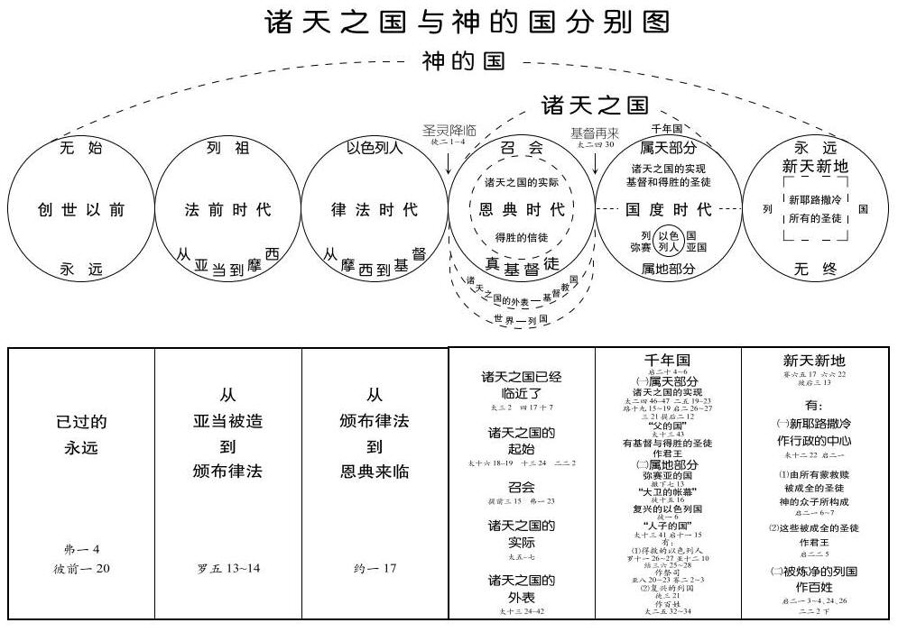

第三周 不是世上的国乃是诸天的国
诗歌：大本751首
读经：
太十三24 耶稣在他们跟前另设一个比喻，说，诸天的国好比人撒好种在他的田里。
44 诸天的国好像宝贝藏在田地里，人找到了，就藏起来，欢欢喜喜的去变卖他一切所有的，买这田地。
诸天的国有三方面
在马太十三章，我们看见一幅诸天之国外表的图画（见新约圣经恢复本，二八至二九页附图）。神的国包括了从已过永远到将来永远的每件事。在这两个永远之间有时间，分为几个世代或时代。第一个是法前时代。亚当被造之后，被安置在没有罪或黑暗的园子里。从他开始，延伸到摩西，是列祖时期。这段列祖时期就是我们所知道的法前时代。然后是律法时代。接着是两个重要的时代，一个是恩典时代，召会时代，另一个是国度时代，即千年国。我们已经指出，诸天的国只包括这两个时代。在恩典时代很复杂，因为诸天的国有三方面：实际、外表和实现。只要召会是正常的，就是国度的实际。在正常的情形里，召会等于国度的实际。国度的第三方面，就是实现，是在千年国的属天部分，较高部分。较低部分、属地部分是弥赛亚国，即弥赛亚的国，但属天部分是诸天之国的实现。在十三章四十三节，这属天部分也称为父的国，而在马太十三章四十一节，属地部分称为人子的国。所以人子的国就是弥赛亚的国，父的国就是诸天之国的实现。
在正常的召会里，这就是诸天之国的实际
我们论到国度的外表。在图上我们已经用虚线标明国度的外表。似乎基督教国和世界不同，但实际上根本没有分别。诸天之国的外表就是今天的基督教国。它是黑暗、鬼魔、甚至地狱的，我们都必须定罪它。你在那里？你在国度的外表，还是在国度的实际里？从前你在世界里，但如今你在召会里。但召会不再是正常的，她已经变得不正常了。所以在召会里需要有虚线。正常的召会是实际，但虚线内的范围指明不正常的召会。所有的真基督徒都在召会里，但其中有些基督徒变得不正常、失败了。你也许说你不在世界里，也不在基督教国，就是国度的外表里，你乃是在召会里。但你是在光景正常的召会里，还是在光景不正常的召会里？那些是荆棘地的信徒乃是不正常的。他们是真基督徒，但种子的生长被荆棘挤住了，以致不能结实。果实表明繁增和彰显。但那些在诸天之国宪法水平上的信徒是正常的。他们灵里贫穷、清心；所有的脾气、情欲、己和肉体都对付了；没有思虑；也不受钱财的迷惑。他们是把基督长到国度里的好土。所以他们在正常的召会里，这就是诸天之国的实际。
当主耶稣回来时，你会在那里？我们若忍耐到底，就是保守自己在灵里到底，我们就要得救，并且要在诸天之国的实现里，就是在千年国的属天部分。在那里的人，要与基督一同掌权。按照十三章四十三节，他们“在他们父的国里，要发光如同太阳。”这是真正的仓，在那里所有的麦子都要发光照耀列国。那种照耀就是作王治理、掌权。
我们需要看见，今天的基督教是在黑暗里。许多人不知道自己在那里，自己该在那里，或要往那里去。但在圣经中有光，景象也非常清楚。我们所看见的完全不是照着人的观念，乃是照着神圣启示的话。这图上的每件事都在圣经里得到证实。在主恢复里的每个人，都必须对这图有深刻的印象。我们处在复杂的时代。基督已经来了，并且撒了种；但仇敌也来了，并且作了事，造成复杂的情形。所以在今世有世人；有麦子，国度之子，神的儿女；也有在神儿女中间的稗子，假信徒，挂名的基督徒，恶者之子。许多国度之子堕落了，并且落在标准之下。因此，他们是不正常的。
诸天之国的实现
在此有四等人：正常的信徒、不正常的信徒、假信徒、世人。一天过一天，我们夹在这四类人中间。在你工作的地方，这四等人可能都有代表。我们需要以对今日世代的清楚眼光面对这种情形。我们不愿和世界站在一起，也不愿成为基督教国的一部分。此外，我们也不愿作不正常的真信徒。反之，我们要作正常的真信徒，真国度之子，照着诸天之国的宪法而活。我们要照着宪法过生活，好生长基督。凡我们所生长的，都将是一种繁增，这繁增就是诸天之国的构成成分。所以，今天我们不仅在实际里—我们就是实际。然后主耶稣这位王再来时，我们就要在诸天之国的实现里，发光照耀世界，与基督一同作王掌权，并且享受千年国的属天部分。（马太福音生命读经，第三十七篇）

彼此问互相答：
1 诸天的国有几方面？分别是什么？它们之间有什么区别？
2 今天，我们能有份于诸天的国吗？
3 我们今天该过怎样的生活，才能有份于国度的实现呢？